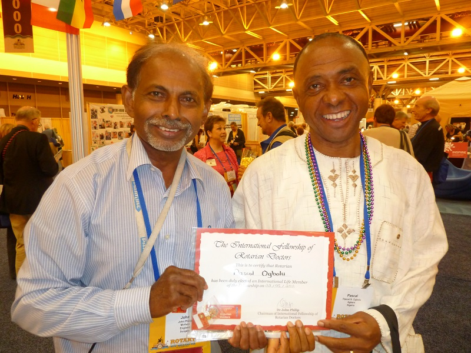

Home / Membership

Welcoming all healthcare professionals
Our Fellowship is the natural home of all health professionals – Rotarians and non-Rotarians – all that is needed is a heart to do good in the world and help those in need.
1) Life membership – This is open to practising and retired Healthcare Professionals, who want to stay connected with colleagues and help others. Life members are at the heart of our Fellowship. They determine policies, take up office and can use our fundraising platforms. Life membership is granted upon application and payment of a onetime fee of GBP 80.00
2) Associate members – This is open to those who belong to a subgroup or branch. Associate membership is awarded upon application and payment of a onetime fee of GBP 12.00.
To develop a global fellowship of Healthcare Professionals who, by personal and collective efforts, seek to deliver and support safe and respectful health care, every time, everywhere.
Subgroups – We have two subgroups – associate members can join both.
1) Health Outcomes and Patient Safety – with focus on safe and respectful healthcare for everyone everywhere
2) Safe and Sustainable Medical Equipment Supply – with focus on increasing the long term impact of supplying medical equipment to those in need
By joining this global fellowship, you will be becoming part of an organisation which changes lives. The funds we collect from members are used only to help meet our very small administrative costs.